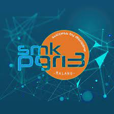

|  | Partnership |
| Home | Bidang Keahlian | Partnership |
Menurut data dari Kementrian Perindustrian, pada tahun 2019 ini kemenperin telah menyusun program pembinaan dan pengembangan yang link and match antara SMK dan industri sebanyak 1.775 SMK meliputi 845.000 siswa untuk dikerjasamakan kepada 355 perusahaan industri.
Salah satu SMK favorit di kota Malang ini telah menjalin kerjasama dengan dunia industri di berbagai bidang, antara lain industri otomotif, permesinan, pemasaran, kelistrian dan elektronika serta teknologi informasi. Kerjasama tersebut meliputi bidang pengembangan, sinkronisasi kurikulum dan penyaluran lulusan SMK, sehingga dunia pendidikan diharapkan mengikuti perkembangan dari dunia Industri. Total sebanyak 253 perusahaan yang sudah kerjasama dengan SMK Pgri 3 Malang, baik dengan bagian proses akademik, maupun praktek kerja industri, dan penyaluran para lulusan untuk perekrutan kerja.
Dalam bidang pengembangan dan sinkronisasi kurikulum di SMK Pgri 3 Malang, jurusan telah mengadakan kerja sama dengan industri otomotif toyota dan daihatsu, yamaha, serta membentuk 17 kelas industri. Pengembangan jurusan di SMK Pgri 3 Malang, diselaraskan dengan kebutuhan dunia industri akan tenaga kerja, sehingga para siswa merasa terbantukan dengan adanya bagian yang menangani output siswa yaitu bagian bursa kerja dan kerjasama industri. Bagian inilah yang bertugas mengupdate informasi kebutuhan industri terhadap dunia pendidikan serta mencarikan pekerjaan para siswa yang baru lulus, diharapkan para lulusan bisa langsung terserap dunia kerja dengan mudah.
Beberapa perusahaan yang sudah kerja sama dengan proses akademik, dengan membentuk kelas industri, antara lain:
Teknik pembangkit tenaga listrik kerja sama dengan Pembangkit Listrik Jawa Bali (PJB), dan Perusahaan Listrik Negara (PLN)
Teknik elektronika audio video kerja sama dengan LG
Manajemen bisnis daring dan pemasaran kerja sama dengan alfamart
Teknik kendaraan ringan kerja sama dengan Daihatsu
Teknik perbaikan bodi otomotif kerja sama dengan Karoseri Morodadi Prima Malang
Teknik permesinan kerja sama dengan PT. Steel Pipe Industri of Indonesia, Tbk (Spindo)
Teknik Informasi dan Komunikasi kerja sama dengan MIKROTIK
Untuk mengetahui jurusan di SMK Pgri 3 Malang silahkan klik disini
SMK Pgri 3 Malang, juga adalah sekolah yang berbeda dengan sekolah lain, yaitu, setiap lulusan selalu dicarikan pekerjaan oleh Bidang Kerja Sama Industri (BKI)
| SISTEM INFORMASI 2021 |